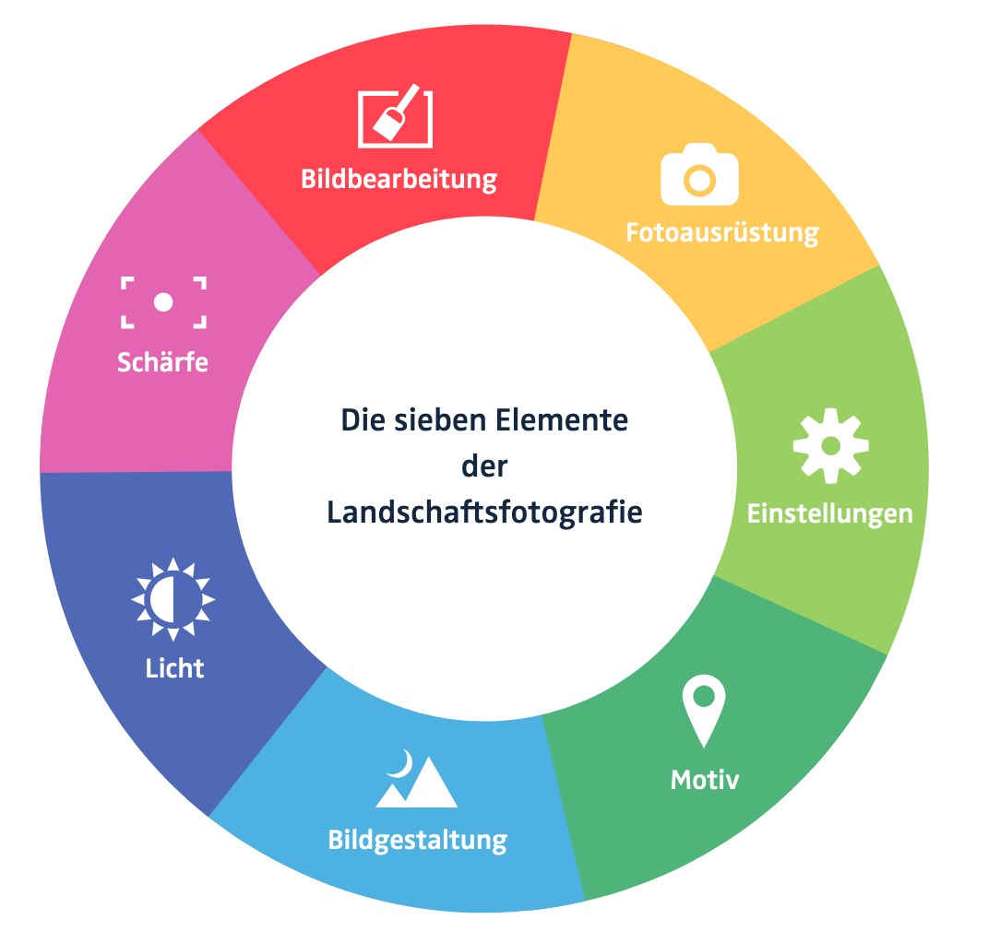

Elemente der Landschaftsfotografie
Zunächst brauchst du eine passende Fotoausrüstung.
Wichtig ist, dass du sie bedienen kannst und die richtigen Einstellungen wählst. Ein spannendes Motiv ist die Essenz für jedes gelungene Foto.
Dieses gilt es, durch eine bewusste Bildgestaltung in Szene zu setzen. Mit dem Licht kannst du das Aussehen und die Atmosphäre deines Fotos gestalten. Eine knackige Schärfe sorgt dafür, dass dein Foto detail-reich und plastisch ist. In der Bildbearbeitung kannst du schließlich das Optimum aus deinem Foto herausholen.

Gelungene Lanschaftsfototografie
- stimmungsvoll: es soll den ganz speziellen Charakter und „Spirit“ eines Ortes oder eines Moments vermitteln
- emotional: es soll beim Betrachter etwas auslösen und den Wunsch wecken, selbst an diesem Ort zu sein
- scharf: es sollen möglichst viele Details zu erkennen sein, egal ob nah oder fern
- ästhetisch: spannunsvoll und zugleich harmonisch, es fesselt den Betrachter
- technisch perfekt: keine Verzerrungen, Sensorflecken, Vignettierung, Farbsäume, etc.
Hier gehts zur Bildergalerie.